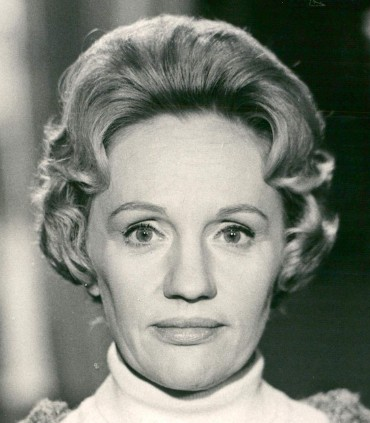
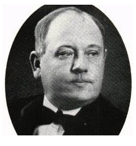

|
Född
13 nov 1913
i 8:e kvarteret köpmannen, Inom vallgraven, Göteborg, Domkyrkoförsamlingen i Göteborg (O)
1
.
Död 4 jun 1983 i Öregrundsgatan 14, Gård 10, Kv London, Ladugårdsgärdet, Stockholm, Oscar (AB) 2 . |
 |
|
Gunnel Margareta Haraldsdotter Wållgren
Född 13 nov 1913 i 8:e kvarteret köpmannen, Inom vallgraven, Göteborg, Domkyrkoförsamlingen i Göteborg (O) 1 . Död 4 jun 1983 i Öregrundsgatan 14, Gård 10, Kv London, Ladugårdsgärdet, Stockholm, Oscar (AB) 2 . |
 F Johan August Harald Wållgren.Född 15 aug 1880 i Ängenäs, Risinge (E) 3 . Död 4 jan 1959 i Arsenalsgatan 4, Inom vallgraven, Göteborg, Domkyrkoförsamlingen i Göteborg (O) 2 . |
FF
August Leontius Wållgren.
Född 18 jun 1854 i Skolhuset, Gammalkil, Gammalkil (E) 4 . Död 11 mar 1914 i Västra S:t Persgatan 6, Gård 3, Kv Hjorten, Gamla Staden, Norrköping, Norrköpings Sankt Olai (E) 5 . |
|
|
FM
Hulda Maria Widoff.
Född 4 dec 1857 i Sättuna, Kaga (E) 6 . Död 21 aug 1880 i Ängenäs, Risinge (E) 7 . |
FMF Axel Johan Widoff. Född 16 dec 1813 i Sättuna, Kaga (E) 8 . Död 31 maj 1870 i Sättuna, Kaga (E) 9 . |
||
|
FMM Lovisa Johansdotter. Född 14 jun 1819 i Väderstad Skattegård, Väderstad, Väderstad (E) 10 . Död 12 apr 1894 i Väderstad (E) 11 . |
|||
|
M
Anna Margareta Kristina Wållgren f Gimberg.
Född 21 aug 1887 i Götgatan 18, Gård 1, Kv Schönborg, Södermalm, Stockholm, Maria Magdalena (AB) 12 . Död 6 dec 1976 i Gnistgatan 5 B, Västra Frölunda, Göteborg, Västra Frölunda (O) 2 . |
|||
|
Gift
2 dec 1941
Skild 17 jun 1949 13 . Erik Stellan Chatham Faustman. Född 3 jul 1919 i Hamngatan 15, Gård 19, Kv Styrpinnen, Norrmalm, Stockholm, Jakob (AB) 14 . Död 22 aug 1961 i Bondegatan 51, Gård 5, Kv Veken, Södermalm, Stockholm, Sofia (AB) 2 . |
|
Gift
7 jul 1954
Per-Axel Helge Branner. Född 25 jan 1899 i Linköpings domkyrkoförsamling (E) 15 . Död 31 jul 1975 i Trädgårdsvägen 14, Gård 7, Kv Trädgården, Lidingö (AB) 2 . |
Framställd 6 nov 2026 med hjälp av Disgen version 2025.